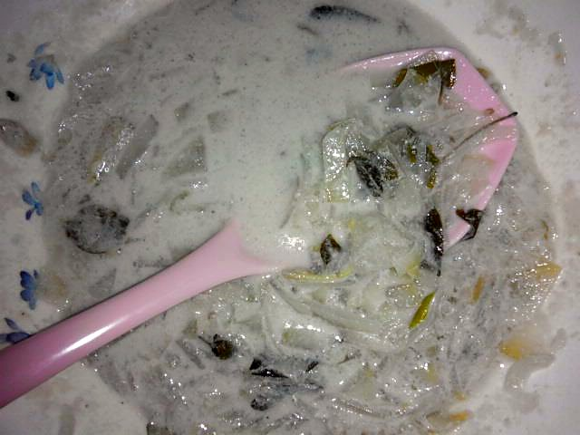

Start the day before. The soaking alone is 6 hr, against 40 min of actual work.
Allergens: none of the ten listed below
Checked against the ingredient list for ten allergens: milk, egg, fish, crustaceans, tree nuts, peanuts, sesame, mustard, soy and gluten. Brands vary, so read the label on anything new to you.
Ingredients
Quantities for 4.
- 400g, peeled and cut into 4cm thin slices Ash Gourd
- 1/2 cup Lobiared cowpeas (van payar) are traditional
- 400ml Coconut Milk300ml thin, 100ml thick, see prep notes
- 4, slit lengthwise Green Chilli
- 2 sprigs Curry Leaves
- 1 tbsp Coconut Oilraw, stirred in at the end
- to taste Salt
Cookware
stovetop
Before you start
- Soak the cowpeas 6 hours or overnight. They stay firm otherwise and will not cook alongside the gourd.
- If you are using tinned coconut milk, dilute 100ml with 200ml water to stand in for the second and third pressings, and keep 100ml undiluted for the finish.
- Olan carries no onion, garlic, mustard or chilli powder. The restraint is the dish, resist adding any.
Method
- Boil the soaked cowpeas in 2 cups of water for 20-25 minutes until soft but still holding their shape. Drain, keeping a little of the cooking water.Squeeze one between your fingers. It should give completely with no chalky centre.
- Put the ash gourd slices in a wide pan with the slit chillies, salt and just enough water to come halfway up.
- Simmer uncovered 8 minutes until the gourd turns translucent at the edges and a knife slides through without resistance.Ash gourd goes from firm to mush in about two minutes. Check early.
- Add the cooked cowpeas and the thin coconut milk. Bring to a bare simmer.
- Cook 5 minutes on low, shaking the pan rather than stirring so the gourd slices stay whole.
- Pour in the thick coconut milk and the curry leaves. Warm through for 1 minute only.Do not let it boil after the thick milk goes in or it will split into oily flecks.
- Take off the heat, stir in the raw coconut oil and cover for 5 minutes before serving.The raw oil is the signature aroma of olan. Use good unrefined coconut oil.
Storage
Keeps 2 days refrigerated. Reheat very gently over low heat without boiling; it will thicken as it sits, so loosen with a spoonful of water.
Nutrition Good estimate
Low protein: 8 g a serving, 10% of the calories
| Per serving231 g | Per 100 g | |
|---|---|---|
| Calories | 314 kcal | 137 kcal |
| Protein | 7.7 g | 3 g |
| Carbohydrate | 19.2 g | 8 g |
| of which sugars | 1.7 g | 1 g |
| Fibre | 2.8 g | 1 g |
| Fat | 25.0 g | 11 g |
| of which saturated | 21.8 g | 9 g |
| of which unsaturated | 1.6 g | 1 g |
Ingredients given to taste count as zero, so the real figures run a little higher. Nearest database match used for ash gourd, curry leaves. Estimated from raw ingredients using USDA FoodData Central.
Times, yields, allergens and nutrition are guidance. Use your own judgement on doneness and on storing. More in About.